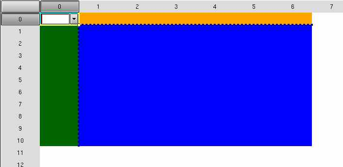

4.4. Modifying cell contents
As previously stated , a cell may contain text, picture or other widgets. GtkSheet functions can be categorized after the number of modified cells:
4.4.1. Functions that modify a cell
A cell text is set by:
/* Set a cell text with justification */
void gtk_sheet_set_cell (GtkSheet *sheet,
gint row, gint col,
GtkJustification justification,
const gchar *text);
/* No justification is made */
void gtk_sheet_set_cell_text (GtkSheet *sheet,
gint row, gint col,
const gchar *text); The text string will be copied by the gtksheet library so you may free your string after this line. Do not free the internally allocated string ! This will be done by the library at the destruction of the sheet or when the gtk_sheet_set_cell is called again.
The text justification in the cell may be: GTK_JUSTIFY_LEFT, GTK_JUSTIFY_RIGHT, GTK_JUSTIFY_CENTER
A cell text is read by:
gchar * gtk_sheet_cell_get_text (GtkSheet *sheet, gint row, gint col);

A cell text is deleted by:
void gtk_sheet_cell_clear(GtkSheet *sheet, gint row, gint col); /*- delete cell contents */ void gtk_sheet_cell_delete(GGtSheet *sheet, gint row, gint col); /* - delete + remove links*/
You can pack a xpm into a cell like this:
GtkWidget *sheet,*bullet;
GdkPixmap *pixmap;
GdkColormap *colormap;
GdkBitmap *mask;
............
sheet=gtk_sheet_new(...);
.......
colormap = gdk_colormap_get_system();
pixmap = gdk_pixmap_colormap_create_from_xpm_d(NULL, colormap, &mask, NULL,
bullet_xpm);
bullet = gtk_pixmap_new(pixmap, mask);
gtk_sheet_attach(GTK_SHEET(sheet), bullet, 1, 1, 0,0 ,.5, .5);
........
gtk_widget_show_all (bullet);
gtk_widget_show_all (window);See full example here: xpm.c

You can pack a combo box into a cell:
GtkWidget *sheet,*combo; GList *combo_items; .................. combo=gtk_combo_new(); combo_items=NULL; combo_items=g_list_append (combo_items, "NULL"); combo_items=g_list_append (combo_items, "NOT NULL"); gtk_combo_set_popdown_strings (GTK_COMBO (nul_combo), combo_items); g_list_free(combo_items); // The cell may be resized automatically to fit the widget gtk_sheet_attach_default (GTK_SHEET(sheet), current_combo, row, col,0,0);

The widgets can be added to a cell using these functions. Some of them expand/shrink cell depending of widget size ,others don't. See the GtkSheet manual for details.
/* Attach widget at (row x,col y) starting at the upper left of the cell */ GtkSheetChild *gtk_sheet_put (GtkSheet *sheet, GtkWidget *widget, gint x, gint y); void gtk_sheet_attach (GtkSheet *sheet,GtkWidget *widget,gint row, gint col,gint xoptions,gint yoptions,gint xpadding,gint ypadding); void gtk_sheet_attach_default (GtkSheet *sheet,GtkWidget *widget,gint row, gint col); void gtk_sheet_attach_floating (GtkSheet *sheet,GtkWidget *widget,gint row, gint col);
You can set a link for each cell. This is in fact a pointer you want to be associated to the cell.
void gtk_sheet_link_cell(GtkSheet *sheet, gint row, gint col,gpointer link); gpointer gtk_sheet_get_link(GtkSheet *sheet, gint row, gint col); void gtk_sheet_remove_link(GtkSheet *sheet, gint row, gint col);
4.4.2. Functions that modify a range of cells
A range of cellsis in fact:
struct _GtkSheetRange
{
gint row0,col0; /* upper-left cell */
gint rowi,coli; /* lower-right cell */
};Some functions operating on range of cells:
void gtk_sheet_get_visible_range (GtkSheet *sheet,GtkSheetRange *range); void gtk_sheet_range_set_background (GtkSheet *sheet, const GtkSheetRange *range, const GdkColor *color); void gtk_sheet_range_set_foreground (GtkSheet *sheet, const GtkSheetRange *range,const GdkColor *color); void gtk_sheet_select_range (GtkSheet *sheet, const GtkSheetRange *range); void gtk_sheet_unselect_range (GtkSheet *sheet); void gtk_sheet_range_clear (GtkSheet *sheet, const GtkSheetRange *range); void gtk_sheet_range_delete (GtkSheet *sheet, const GtkSheetRange *range); void gtk_sheet_range_set_editable (GtkSheet *sheet, const GtkSheetRange *range, gint editable); void gtk_sheet_range_set_visible (GtkSheet *sheet, const GtkSheetRange *range, gboolean visible); void gtk_sheet_range_set_border (GtkSheet *sheet, const GtkSheetRange *range, gint mask, guint width, gint line_style); void gtk_sheet_range_set_border_color GtkSheet *sheet, const GtkSheetRange *range, const GdkColor *color);
Remark:
/* When you declare a range like this:*/ ...... GtkSheetRange range; ................. /* You must call the range functions like this : */ void gtk_sheet_range_clear (sheet, &range);
Screenshot:Modifying the background color of a range.

4.4.3. Functions that modify all cells from sheet
These functions are used if you want the cells to contain the same widget. These are some of them:
GtkWidget *gtk_sheet_new_with_custom_entry (guint rows, guint columns, const gchar *title,GtkType entry_type); void gtk_sheet_set_foreground (GtkSheet *sheet,GdkColor *fg_color); void gtk_sheet_set_background (GtkSheet *sheet,GdkColor *bg_color);
4.4.4. Functions that set row/column titles , sheet title , etc
A row/column title can be set with:
void gtk_sheet_row_button_add_label (GtkSheet *sheet, gint row, const gchar *label); void gtk_sheet_column_button_add_label (GtkSheet *sheet, gint row, const gchar *label);
gtk_sheet_set_row_title() is used for setting an internal label associated with a row.
The sheet title may be set with :
void gtk_sheet_set_title (GtkSheet *sheet, const gchar *title);
The dimensions of the row/column titles may be set with the next functions: These functions exist because you may want to resize the width of a column or height of a row, unless you set the autoresize flag, which will do it automaticaly for you.
void gtk_sheet_set_row_titles_width(GtkSheet *sheet, guint width); void gtk_sheet_set_column_titles_height(GtkSheet *sheet, guint height);
Row/column title justification is done by:
void gtk_sheet_set_row_titles_width(GtkSheet *sheet, guint width); void gtk_sheet_set_column_titles_height(GtkSheet *sheet, guint height);